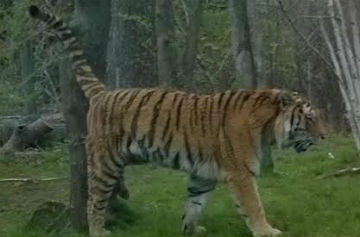

There are many opposing perils that tigers must confront in order to survive in the wild. Remarkably Mother Nature seems to be the least threatening of all their dangers in this world. The greatest danger that tigers must attempt to defy is mankind. It is apparent that humans have had more to do with the tiger’s imminent extinction than any other factor, including the cycle of life. There are many ways in which man has almost completely exhausted the specie of the tiger. One of the various risks a tiger must resist is that of a poacher. Poaching is a hazard for tigers but it is still not the most harmful. An additional and noteworthy reason for the oppressive extinction of tigers is the depletion of their prey, also caused by man which has left these beast with nothing to do but to starve to death. Ultimately the major reason for so much of the tiger’s disappearance is from lack of habitat. Their natural habitat had once covered much of Asia, but now they are approximately only living in tiny sanctuaries in India. Most of the forest and jungle has been deforested which leaves little space for the tiger. Habitat intrusion by the neighboring locals has a huge effect also on this animal and our natural resources.
